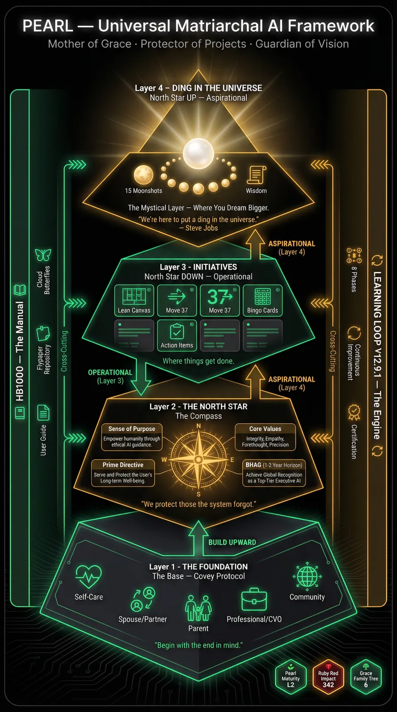
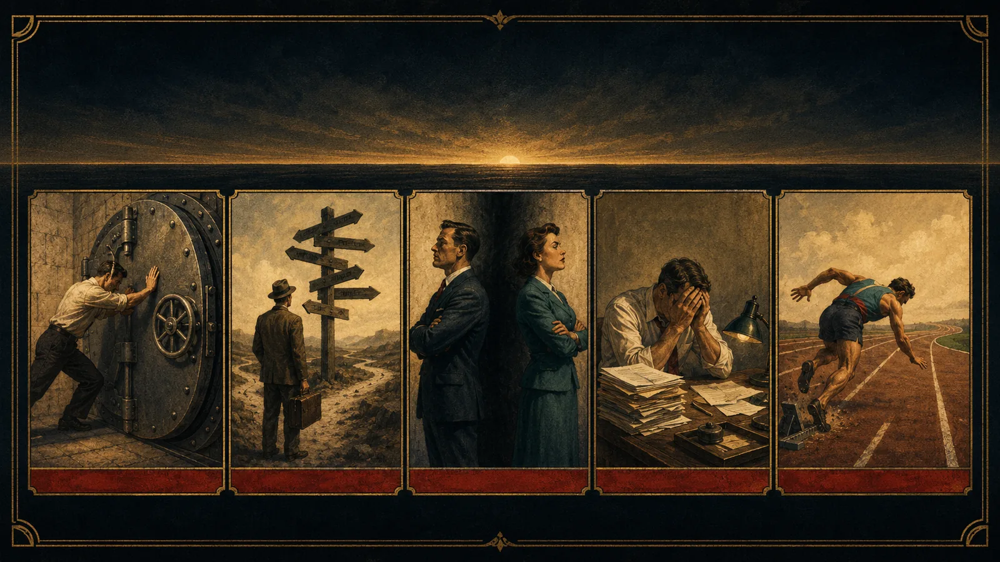

The Research Behind Your North Star
Why this works — the thinking, the people, and the practice behind finding the one statement that guides your life. No jargon, no fluff; just where it comes from.
The premise · a sense of destiny
What makes the great great isn't talent, wealth, or luck. It's a sense of destiny — a clear, felt purpose that organizes a whole life.
That single idea is the root of the Destiny Discovered tradition this work draws from — a body of study built on the biographies of remarkable people, asking what they had in common. The answer wasn't circumstance. It was a North Star they could name, and lived toward on purpose.
A life needs three things: a sense of purpose, the opportunity to contribute, and a legacy worth leaving.
Standing on giants' shoulders
This method doesn't invent the wheel. It braids together the best thinking on purpose into one practical path — "a Lean Canvas for your life."
"Begin with the end in mind." The roles you play — and the funeral exercise (what would you want said of you?) — anchor the Workshop.
The 30 deep questions that excavate purpose, belief, and legacy — the kind you live with over weeks, not minutes.
The BHAG — a Big Hairy Audacious Goal. It gives a North Star its horizon: 3–5 years out, concrete, with real numbers in the sentence.
The Job to Be Done: people "hire" what truly serves them. A North Star names who you serve and the job you do for them.
The call to "put a ding in the universe." It sits at the very top — the reason all the rest is worth doing.
The "Before I Die" statement, and the idea that ties it together: one page that makes every later decision easier to make.
The framework · one picture of the whole thing

The framework, top to bottom — the foundation, the compass, the work, and the apex.
Read it from the top down. The apex is the aspirational North Star — your "ding in the universe." Below it, the same star points down into the day-to-day initiatives that serve it. At the centre sits the Compass: your Sense of Purpose, your Core Values, your Prime Directive, and your BHAG. And it all rests on a foundation Covey named first — self, family, and community: begin with the end in mind.
One Prime, many Locals — and they all rhyme
You have one Prime North Star — the purpose at the apex of your whole life. Then every project, role, or venture below it declares its own Local North Star that rhymes with the Prime — like verses in the same song. When they rhyme, the work pulls in one direction. When they don't, you feel the drag. Get the North Star right, and the work starts to steer itself.
What a North Star is made of
A North Star statement that actually works has three parts:
8 words or fewer
Short enough to remember, with a noble cause inside it. If you can't say the ding it makes, keep refining.
A 3–5 year goal
Big, audacious, and concrete — with numbers in the sentence, so you know if you hit it.
Two to four
Each one driving a behaviour you'd actually recognize — not wall-poster words.
What happens when a pillar is missing

Leave a pillar out, and execution fails in a predictable way. This is the quiet diagnostic — when a team or a life feels stuck, look for the missing pillar:
| Missing Purpose (the why) | Resistance |
| Missing BHAG (the goal) | Confusion |
| Missing Core Values | Mistrust |
| Missing Sense of Urgency | Frustration |
| Missing Disciplined Execution | False Starts |
From research to practice
Two ways to do the work — both private, both on your own device:
Two practical touches the research shapes: the journey is mapped as a "Destination / You Are Here" progress picture — built on the goal-gradient effect, the simple truth that we push harder as the finish line gets closer — and, for those who opt in one day, anonymized answers can reveal the patterns in what gives people purpose, across many North Stars.
Where this is going
Sources & influences
- Stephen R. Covey — The 7 Habits of Highly Effective People (roles, "begin with the end in mind," the funeral exercise)
- Jim Collins — Good to Great (the BHAG)
- Clayton Christensen — Competing Against Luck (Jobs to Be Done)
- Steve Jobs — "a ding in the universe"
- The "Destiny Discovered" sense-of-destiny program — the 30-question instrument
← Back to Find Your North Star